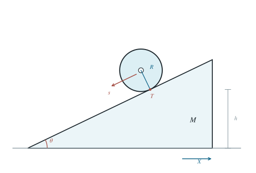

盛水薄壁圆筒与活动楔面的滚动
分别求固定斜面与可动楔面上的加速度，并由位移和能量求木块末速。
1 题目
1.1 物理情境
薄壁圆筒半径为 ，筒壁质量 ，内部盛有质量 的水。它在倾角 的楔面上滚动；楔形木块的质量为 ，可固定，也可放在光滑水平桌面上。
1.2 物理过程
圆筒从静止开始沿斜面向下无滑动滚动。先固定楔形木块；再释放木块使其能水平运动。活动木块情形中，圆筒初始位置相对桌面的高度为 ，并一直滚到斜面底端。
1.3 已知参数和理想化假设
，。筒壁与水之间不传递切向摩擦，水只随圆筒质心平动而不参与绕筒轴转动；忽略液面流动的附加动能与晃动。筒壁绕轴转动惯量 。楔面与筒之间的静摩擦足以保持滚动，桌面无摩擦。
1.4 求解目标
求木块固定时圆筒质心沿斜面的加速度；木块可动时木块的水平加速度；圆筒下降高度 到达斜面底端时木块的速率。

取木块向右位移 与圆筒相对斜面向左下的路程 为广义坐标；圆筒质心的水平坐标为 。
2 思路与提示
水随圆筒质心平动，但不随筒壁自转。活动楔形木块还需把它的水平反冲作为独立自由度，并用水平动量守恒消去该自由度。
3 解答展开 / 收起
3.1 固定楔面：辨认平动与转动惯量
令 为筒和水的总质量。水与筒壁具有相同的质心平动加速度 ，但绕轴角加速度只使筒壁产生角动量。无滑动约束给出 。沿坡方向设静摩擦为 ，则
消去 得 ，从而
3.2 活动楔面：建立完整动能
取 向右、 沿斜面向左下为正。圆筒及水的质心速度分量是 、；筒壁的自转角速度为 。记 ，系统动能及势能可写为
该动能已分别计入木块平动、筒水整体平动及筒壁自转；若再把水计入自转惯量，会把其转动能重复计入。
3.3 用水平动量守恒消去木块速度
不显含于拉格朗日量，故其共轭动量是系统总水平动量。初始静止使该量恒为零：
对 写另一拉格朗日方程，再代入上式，设 ，得到
3.4 求楔块加速度与终点速度
将相对加速度代回第（4）式：
楔块向右运动。圆筒下降 时，相对位移 。由 和第（4）式，得到此时木块速率
当 时，木块加速度和速率均趋于零，而 ，与固定楔面结论一致。
4 方法与讨论
固定斜面可直接用牛顿方程；活动斜面最清楚的做法是先写出严格的两自由度动能，再利用水平平移对称性。模型中的“水只平动”是题设的理想化，真实液体的速度场会受黏性、容器充填程度与自由液面影响。